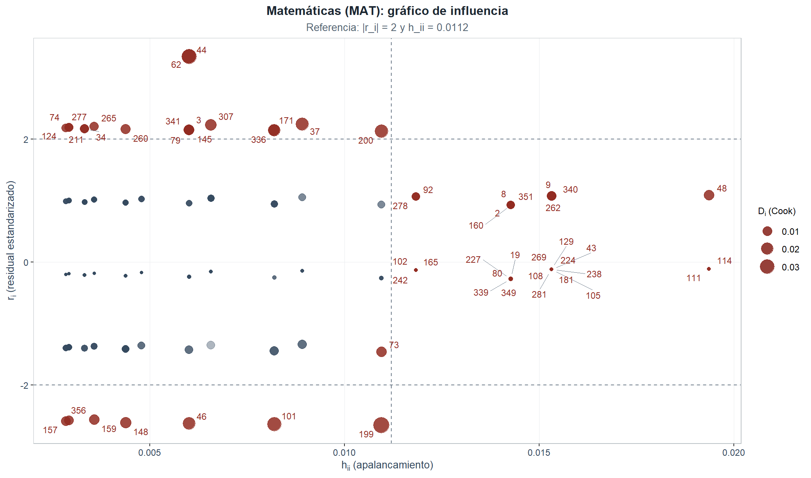
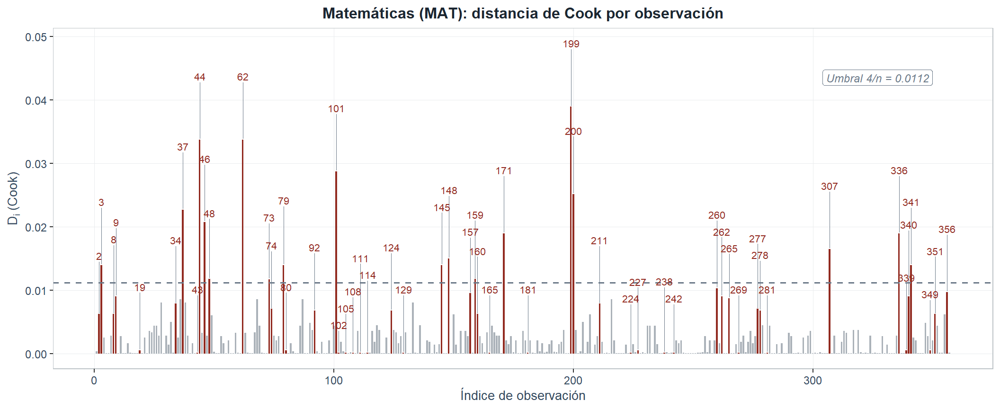
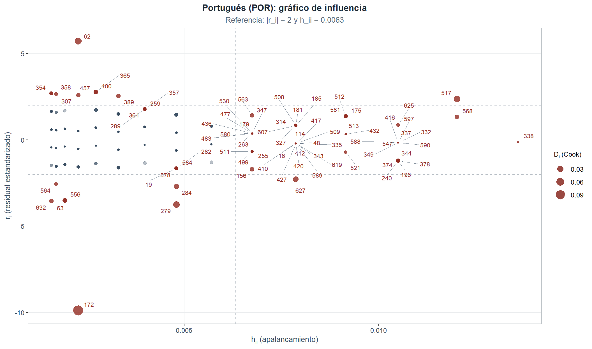
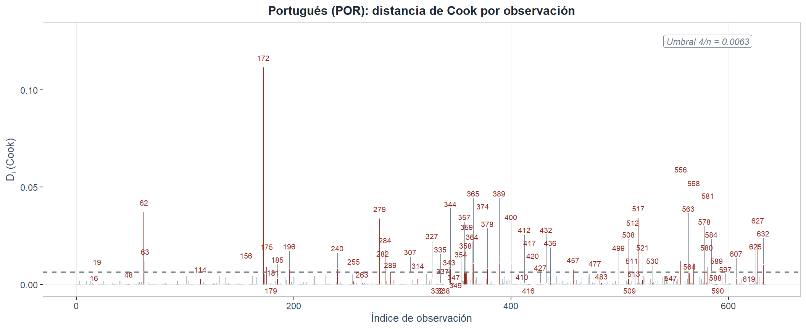
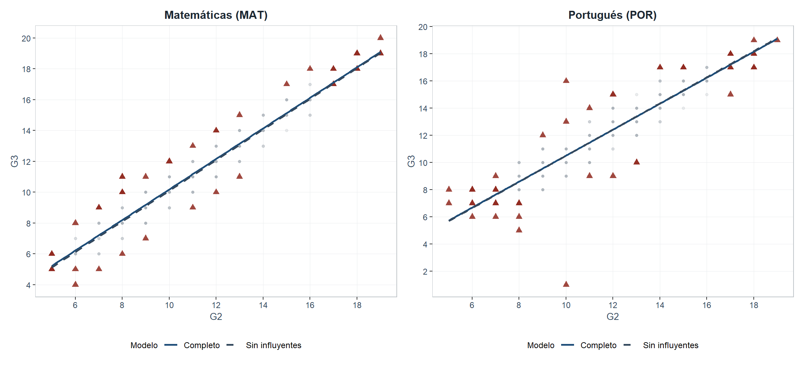

5 Análisis de datos atípicos e influyentes
5.1 Criterios de detección
Una observación puede ser atípica (\(|r_i| > 2\)), de alto apalancamiento (\(h_{ii}\) extremo) o influyente (modifica \(\hat\beta\) al excluirla). Indicadores estándar (Belsley, Kuh y Welsch, 1980; Montgomery y Runger, 2021, §11-7):
| Indicador | Fórmula | Umbral |
|---|---|---|
| Residual estandarizado | \(r_i = \varepsilon_i / (\hat\sigma\sqrt{1 - h_{ii}})\) | \(\|r_i\| > 2\) |
| Leverage | \(h_{ii} = \frac{1}{n} + \frac{(x_i - \bar{x})^2}{S_{xx}}\) | \(h_{ii} > 4/n\) |
| Distancia de Cook | \(D_i = \frac{r_i^2}{p+1} \cdot \frac{h_{ii}}{1-h_{ii}}\) | \(D_i > 4/n\) |
| DFFITS | \(DFFITS_i = r_i^* \sqrt{h_{ii}/(1-h_{ii})}\) | \(\|DFFITS_i\| > 2\sqrt{(p+1)/n}\) |
Con \(p = 1\): MAT — Cook/leverage = \(0.0112\), DFFITS = \(0.1497\); POR — Cook/leverage = \(0.0063\), DFFITS = \(0.1123\).
5.2 Diagnóstico de influencia — Matemáticas (MAT)
5.2.1 Visualización combinada

Figure 5.1: Gráfico de influencia para Matemáticas (MAT): eje horizontal, apalancamiento \(h_{ii}\); eje vertical, residual estandarizado \(r_i\); tamaño de burbuja proporcional a la distancia de Cook \(D_i\). Las líneas discontinuas grises delimitan las zonas de atipicidad (\(|r_i| = 2\)) y de alto apalancamiento (\(h_{ii} = 4/n\)). Las observaciones flagueadas se muestran en rojo quemado; sus etiquetas se reposicionan automáticamente para evitar solapamientos.
5.2.2 Distancia de Cook por índice

Figure 5.2: Distancia de Cook por índice de observación para Matemáticas (MAT). La línea horizontal discontinua marca el umbral \(4/n\). Las observaciones que superan el umbral se destacan en rojo quemado y sus índices se etiquetan en el margen superior.
5.2.3 Conteo y detalle de observaciones flagueadas
| Criterio | N° obs. | % del total |
|---|---|---|
| Residual estandarizado |r_i| > 2 | 25 | 7.00 |
| Leverage h_ii > 0.0112 | 29 | 8.12 |
| Cook D_i > 0.0112 | 18 | 5.04 |
| DFFITS > 0.1497 | 18 | 5.04 |
| Al menos un criterio | 55 | 15.41 |
| Observación | G2 | G3 | r_i (estand.) | h_ii (leverage) | D_i (Cook) | DFFITS_i | Flag Cook | Flag Lev | Flag |r|>2 | Flag DFFITS |
|---|---|---|---|---|---|---|---|---|---|---|
| 2 | 5 | 6 | 0.9263 | 0.0143 | 0.006209 | 0.1114 | ✓ | |||
| 3 | 8 | 10 | 2.1501 | 0.0060 | 0.013953 | 0.1679 | ✓ | ✓ | ✓ | |
| 8 | 5 | 6 | 0.9263 | 0.0143 | 0.006209 | 0.1114 | ✓ | |||
| 9 | 18 | 19 | 1.0777 | 0.0153 | 0.009029 | 0.1344 | ✓ | |||
| 19 | 5 | 5 | -0.2718 | 0.0143 | 0.000535 | -0.0327 | ✓ | |||
| 34 | 10 | 12 | 2.1703 | 0.0033 | 0.007856 | 0.1260 | ✓ | |||
| 37 | 16 | 18 | 2.2458 | 0.0089 | 0.022674 | 0.2142 | ✓ | ✓ | ✓ | |
| 43 | 18 | 18 | -0.1210 | 0.0153 | 0.000114 | -0.0151 | ✓ | |||
| 44 | 8 | 11 | 3.3431 | 0.0060 | 0.033732 | 0.2636 | ✓ | ✓ | ✓ | |
| 46 | 8 | 6 | -2.6221 | 0.0060 | 0.020750 | -0.2054 | ✓ | ✓ | ✓ | |
| 48 | 19 | 20 | 1.0915 | 0.0194 | 0.011762 | 0.1534 | ✓ | ✓ | ✓ | |
| 62 | 8 | 11 | 3.3431 | 0.0060 | 0.033732 | 0.2636 | ✓ | ✓ | ✓ | |
| 73 | 6 | 5 | -1.4558 | 0.0109 | 0.011725 | -0.1534 | ✓ | ✓ | ||
| 74 | 12 | 14 | 2.1929 | 0.0029 | 0.007036 | 0.1193 | ✓ | |||
| 79 | 8 | 10 | 2.1501 | 0.0060 | 0.013953 | 0.1679 | ✓ | ✓ | ✓ | |
| 80 | 5 | 5 | -0.2718 | 0.0143 | 0.000535 | -0.0327 | ✓ | |||
| 92 | 17 | 18 | 1.0642 | 0.0118 | 0.006777 | 0.1164 | ✓ | |||
| 101 | 7 | 5 | -2.6365 | 0.0082 | 0.028695 | -0.2416 | ✓ | ✓ | ✓ | |
| 102 | 17 | 17 | -0.1324 | 0.0118 | 0.000105 | -0.0145 | ✓ | |||
| 105 | 18 | 18 | -0.1210 | 0.0153 | 0.000114 | -0.0151 | ✓ | |||
| 108 | 18 | 18 | -0.1210 | 0.0153 | 0.000114 | -0.0151 | ✓ | |||
| 111 | 19 | 19 | -0.1096 | 0.0194 | 0.000119 | -0.0154 | ✓ | |||
| 114 | 19 | 19 | -0.1096 | 0.0194 | 0.000119 | -0.0154 | ✓ | |||
| 124 | 11 | 13 | 2.1813 | 0.0028 | 0.006770 | 0.1170 | ✓ | |||
| 129 | 18 | 18 | -0.1210 | 0.0153 | 0.000114 | -0.0151 | ✓ | |||
| 145 | 8 | 10 | 2.1501 | 0.0060 | 0.013953 | 0.1679 | ✓ | ✓ | ✓ | |
| 148 | 9 | 7 | -2.6084 | 0.0044 | 0.014961 | -0.1744 | ✓ | ✓ | ✓ | |
| 157 | 11 | 9 | -2.5833 | 0.0028 | 0.009495 | -0.1389 | ✓ | |||
| 159 | 13 | 11 | -2.5611 | 0.0036 | 0.011735 | -0.1544 | ✓ | ✓ | ✓ | |
| 160 | 5 | 6 | 0.9263 | 0.0143 | 0.006209 | 0.1114 | ✓ | |||
| 165 | 17 | 17 | -0.1324 | 0.0118 | 0.000105 | -0.0145 | ✓ | |||
| 171 | 7 | 9 | 2.1409 | 0.0082 | 0.018921 | 0.1955 | ✓ | ✓ | ✓ | |
| 181 | 18 | 18 | -0.1210 | 0.0153 | 0.000114 | -0.0151 | ✓ | |||
| 199 | 6 | 4 | -2.6518 | 0.0109 | 0.038906 | -0.2814 | ✓ | ✓ | ✓ | |
| 200 | 6 | 8 | 2.1323 | 0.0109 | 0.025156 | 0.2254 | ✓ | ✓ | ✓ | |
| 211 | 10 | 12 | 2.1703 | 0.0033 | 0.007856 | 0.1260 | ✓ | |||
| 224 | 18 | 18 | -0.1210 | 0.0153 | 0.000114 | -0.0151 | ✓ | |||
| 227 | 5 | 5 | -0.2718 | 0.0143 | 0.000535 | -0.0327 | ✓ | |||
| 238 | 18 | 18 | -0.1210 | 0.0153 | 0.000114 | -0.0151 | ✓ | |||
| 242 | 17 | 17 | -0.1324 | 0.0118 | 0.000105 | -0.0145 | ✓ | |||
| 260 | 9 | 11 | 2.1599 | 0.0044 | 0.010259 | 0.1440 | ✓ | |||
| 262 | 18 | 19 | 1.0777 | 0.0153 | 0.009029 | 0.1344 | ✓ | |||
| 265 | 13 | 15 | 2.2052 | 0.0036 | 0.008700 | 0.1326 | ✓ | |||
| 269 | 18 | 18 | -0.1210 | 0.0153 | 0.000114 | -0.0151 | ✓ | |||
| 277 | 12 | 14 | 2.1929 | 0.0029 | 0.007036 | 0.1193 | ✓ | |||
| 278 | 17 | 18 | 1.0642 | 0.0118 | 0.006777 | 0.1164 | ✓ | |||
| 281 | 18 | 18 | -0.1210 | 0.0153 | 0.000114 | -0.0151 | ✓ | |||
| 307 | 15 | 17 | 2.2316 | 0.0066 | 0.016447 | 0.1824 | ✓ | ✓ | ✓ | |
| 336 | 7 | 9 | 2.1409 | 0.0082 | 0.018921 | 0.1955 | ✓ | ✓ | ✓ | |
| 339 | 5 | 5 | -0.2718 | 0.0143 | 0.000535 | -0.0327 | ✓ | |||
| 340 | 18 | 19 | 1.0777 | 0.0153 | 0.009029 | 0.1344 | ✓ | |||
| 341 | 8 | 10 | 2.1501 | 0.0060 | 0.013953 | 0.1679 | ✓ | ✓ | ✓ | |
| 349 | 5 | 5 | -0.2718 | 0.0143 | 0.000535 | -0.0327 | ✓ | |||
| 351 | 5 | 6 | 0.9263 | 0.0143 | 0.006209 | 0.1114 | ✓ | |||
| 356 | 12 | 10 | -2.5719 | 0.0029 | 0.009678 | -0.1402 | ✓ | |||
| * Umbrales empleados: |r_i| > 2; h_ii > 0.0112; D_i > 0.0112; |DFFITS_i| > 0.1497. |
Figuras 5.1, 5.2 y Tablas 5.1, 5.2: 55 observaciones (15.41 %) superan al menos un umbral en MAT. La mayoría corresponde a estudiantes con G2 extremo —alto apalancamiento por ubicación en las colas del predictor, comportamiento esperable (Belsley et al., 1980)—. Las observaciones con \(|r_i| > 2\) son estudiantes cuya G3 se aparta de lo pronosticado por G2, lo que recoge factores no incluidos en el modelo simple.
5.3 Diagnóstico de influencia — Portugués (POR)
5.3.1 Visualización combinada

Figure 5.3: Gráfico de influencia para Portugués (POR), con la misma estructura que la Figura 5.1. La dispersión de los residuales estandarizados es razonablemente acotada, coherente con un modelo bien ajustado, aunque con mayor varianza residual que en MAT (\(\hat{\sigma} = `r sigma_por`\) frente a \(`r sigma_hat`\)).
5.3.2 Distancia de Cook por índice

Figure 5.4: Distancia de Cook por índice de observación en Portugués (POR). Misma convención que la Figura 5.2.
5.3.3 Conteo de flagueadas en POR
| Criterio | N° obs. | % del total |
|---|---|---|
| Residual estandarizado |r_i| > 2 | 17 | 2.68 |
| Leverage h_ii > 0.0063 | 56 | 8.83 |
| Cook D_i > 0.0063 | 28 | 4.42 |
| DFFITS > 0.1123 | 32 | 5.05 |
| Al menos un criterio | 79 | 12.46 |
| Observación | G2 | G3 | r_i (estand.) | h_ii (leverage) | D_i (Cook) | DFFITS_i | Flag Cook | Flag Lev | Flag |r|>2 | Flag DFFITS |
|---|---|---|---|---|---|---|---|---|---|---|
| 172 | 10 | 1 | -9.8766 | 0.0023 | 0.111492 | -0.5131 | ✓ | ✓ | ✓ | |
| 62 | 10 | 16 | 5.7009 | 0.0023 | 0.037145 | 0.2796 | ✓ | ✓ | ✓ | |
| 517 | 5 | 8 | 2.3698 | 0.0120 | 0.034125 | 0.2622 | ✓ | ✓ | ✓ | ✓ |
| 279 | 8 | 5 | -3.7412 | 0.0048 | 0.033750 | -0.2625 | ✓ | ✓ | ✓ | |
| 627 | 17 | 15 | -2.2956 | 0.0079 | 0.020900 | -0.2051 | ✓ | ✓ | ✓ | ✓ |
| 284 | 8 | 6 | -2.7014 | 0.0048 | 0.017596 | -0.1885 | ✓ | ✓ | ✓ | |
| 63 | 13 | 10 | -3.5087 | 0.0019 | 0.011917 | -0.1558 | ✓ | ✓ | ✓ | |
| 556 | 13 | 10 | -3.5087 | 0.0019 | 0.011917 | -0.1558 | ✓ | ✓ | ✓ | |
| 389 | 9 | 12 | 2.5412 | 0.0033 | 0.010728 | 0.1471 | ✓ | ✓ | ✓ | |
| 568 | 5 | 7 | 1.3262 | 0.0120 | 0.010687 | 0.1463 | ✓ | ✓ | ✓ | |
| 365 | 14 | 17 | 2.7677 | 0.0027 | 0.010488 | 0.1456 | ✓ | ✓ | ✓ | |
| 400 | 14 | 17 | 2.7677 | 0.0027 | 0.010488 | 0.1456 | ✓ | ✓ | ✓ | |
| 632 | 12 | 9 | -3.5535 | 0.0016 | 0.010062 | -0.1432 | ✓ | ✓ | ✓ | |
| 156 | 7 | 6 | -1.7088 | 0.0067 | 0.009914 | -0.1410 | ✓ | ✓ | ✓ | |
| 175 | 6 | 8 | 1.3699 | 0.0091 | 0.008662 | 0.1317 | ✓ | ✓ | ✓ | |
| 512 | 6 | 8 | 1.3699 | 0.0091 | 0.008662 | 0.1317 | ✓ | ✓ | ✓ | |
| 581 | 6 | 8 | 1.3699 | 0.0091 | 0.008662 | 0.1317 | ✓ | ✓ | ✓ | |
| 196 | 18 | 17 | -1.2102 | 0.0105 | 0.007768 | -0.1247 | ✓ | ✓ | ✓ | |
| 240 | 18 | 17 | -1.2102 | 0.0105 | 0.007768 | -0.1247 | ✓ | ✓ | ✓ | |
| 344 | 18 | 17 | -1.2102 | 0.0105 | 0.007768 | -0.1247 | ✓ | ✓ | ✓ | |
| * Umbrales empleados: |r_i| > 2; h_ii > 0.0063; D_i > 0.0063; |DFFITS_i| > 0.1123. |
Caso atípico extremo en POR. La observación de mayor magnitud residual corresponde a un estudiante con \(G2 = 10\) y \(G3 = 1\) (\(r_i^* = -9.88\)). Pese a la severidad, su leverage es bajo (\(h_{ii} = 0.0023\)) y su distancia de Cook modesta (\(D_i = 0.11149\)): no afecta materialmente \(\hat\beta_1\), pero conecta con la severidad del rechazo de normalidad de §4.3. El patrón (G2 alto seguido de G3 = 0) sugiere un caso administrativo que sobrevivió al filtro de §1.3; dado su impacto nulo sobre los estimadores, se conserva (Kutner et al., 2005, §10.5).
5.4 Impacto sobre los parámetros del modelo
Se reajustan ambos modelos excluyendo las observaciones que superan al menos un umbral y se comparan contra el modelo completo.
| Métrica | MAT — completo | MAT — sin infl. | POR — completo | POR — sin infl. |
|---|---|---|---|---|
| \(n\) (observaciones) | 357 | 302 | 634 | 555 |
| \(\hat{\beta}_0\) | 0.2753 | 0.1646 | 0.948 | 0.8788 |
| \(\hat{\beta}_1\) (G2) | 0.9903 | 0.993 | 0.9563 | 0.9625 |
| \(\Delta\hat{\beta}_1\) (%) | — | 0.27% | — | 0.65% |
| \(R^2\) | 0.9323 | 0.9353 | 0.8719 | 0.8837 |
| \(\Delta R^2\) (%) | — | 0.32% | — | 1.35% |
| \(\hat{\sigma}\) | 0.8407 | 0.6774 | 0.964 | 0.7384 |
|
* Las observaciones influyentes se definen como aquellas que superan al menos uno de los cuatro umbrales presentados en la Sección 5.1. La decisión sobre su exclusión se fundamenta en la magnitud relativa del impacto sobre β₁ y R². |

Figure 5.5: Comparación visual de las rectas ajustadas con el conjunto completo (línea sólida azul marino) y excluyendo las observaciones influyentes (línea discontinua en gris antracita), en Matemáticas (panel izquierdo) y Portugués (panel derecho). Los triángulos rojos identifican las observaciones excluidas. Un desplazamiento mínimo entre las dos rectas indica robustez del modelo.
Tabla 5.5 y Figura 5.5: la pendiente varía 0.27 % en MAT y 0.65 % en POR al excluir las influyentes. Puesto que los cambios relativos en \(\hat{\beta}_1\) quedan por debajo del 5%, ambos modelos pueden calificarse como robustos: la exclusión de las observaciones influyentes no modifica sustancialmente las conclusiones inferenciales. Los triángulos rojos en la Figura 5.5 muestran que en POR dominan las observaciones de alto apalancamiento en las colas de G2, mientras que en MAT coexisten con residuales atípicos en el rango central. La práctica coincidencia entre ambas rectas confirma que ninguna observación ejerce influencia desproporcionada (Belsley et al., 1980, Cap. 2).
Se conserva el modelo con el conjunto completo para los IC e IP de las Secciones 2.6 y 3.5, dado que las observaciones influyentes no presentan errores de registro y corresponden a casos legítimos del espectro académico.